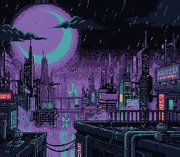

- Generated by
 1.16.1
1.16.1

The two transitions the PPU gives for free: a brightness fade and the mosaic filter. Press any button to step through them: fade out and in at three speeds, then the picture breaking into growing blocks and sharpening again.
After this lesson, you will understand:
| Button | Action |
|---|---|
| Any button | Next transition |
The cycle: fade out / in at 1 frame per step, at 3, at 6, then mosaic out, mosaic in, and again.
Bits 0-3 of INIDISP are the master brightness, 0 (black) to 15 (full); bit 7 is force blank. fadeOut(speed) and fadeIn(speed) (snes/console.h) step the brightness once every speed frames:
| Speed | Frames per step | Whole fade |
|---|---|---|
| 1 | 1 | 15 frames, 0.25 s |
| 3 | 3 | 45 frames, 0.75 s |
| 6 | 6 | 90 frames, 1.5 s |
Brightness 0 is not force blank. The screen is black but the PPU still draws, so VRAM is still closed outside VBlank. To load a new scene, fade out, then setScreenOff(), load, setScreenOn() and fade in.
Bits 7-4 of MOSAIC are the block size minus one (0 = 1x1, 15 = 16x16), bits 3-0 the background layers it applies to. Each block takes the colour of its top-left pixel: the picture looks like a lower resolution of itself, it is not a blur. Sprites are never affected — only backgrounds — so characters can stay sharp while the scene dissolves behind them.
The classic battle transition of SNES RPGs:
Then open fading.sfc in luna (luna-gui fading.sfc) or any emulator.
console, sprite, dma, input, background, mosaic (LIB_MODULES in the Makefile).
| File | Purpose |
|---|---|
| main.c | the transitions, one per button press |
| res/moonrise.png (+ .toml) | the moon over the skyline, Néo-Lumen art (PixelLab, CC0) with its frame painted out by devtools/art_assets/build.py; the build converts it (opensnes-tileset), res/moonrise.inc declares the symbols |
| vram.spec | the VRAM regions of the example (vram_map.h is generated from it) |
| Makefile | build configuration |